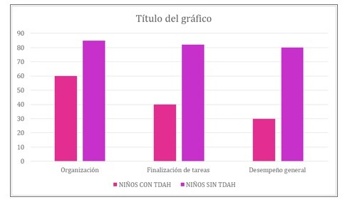

Impacto del TDAH en el desempeño academico
El TDAH puede tener un impacto profundo en el rendimiento académico de los niños.
Las dificultades en la atención y el control de impulsos pueden llevar a:
- Problemas de Organización: Dificultades para mantener el orden en el trabajo escolar y la gestión del tiempo.
- Problemas con la Finalización de Tareas: Los niños pueden comenzar tareas, pero tener dificultades para completarlas a tiempo.
- Desempeño Bajo: Las dificultades para concentrarse y seguir instrucciones pueden resultar en calificaciones más bajas y un mayor riesgo de fracaso académico.

Las estrategias de intervención educativa pueden incluir:
- o Planes de Educación Individualizados (IEP): Adaptaciones personalizadas para apoyar las necesidades del niño en el entorno escolar.
- o Modificaciones en el Aula: Uso de ayudas visuales, tiempos adicionales para completar tareas, y estrategias para mejorar la organización.
- o Entrenamiento en Habilidades de Estudio: Técnicas para ayudar a los niños a desarrollar habilidades organizativas y de gestión del tiempo.

regresar a INICIO